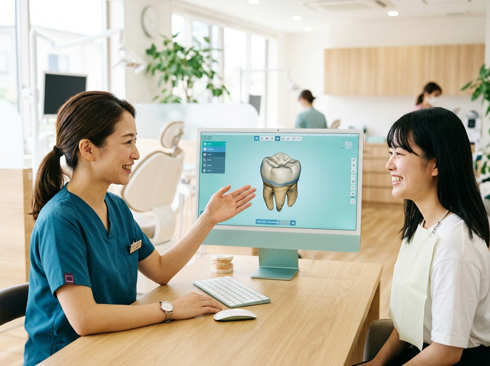
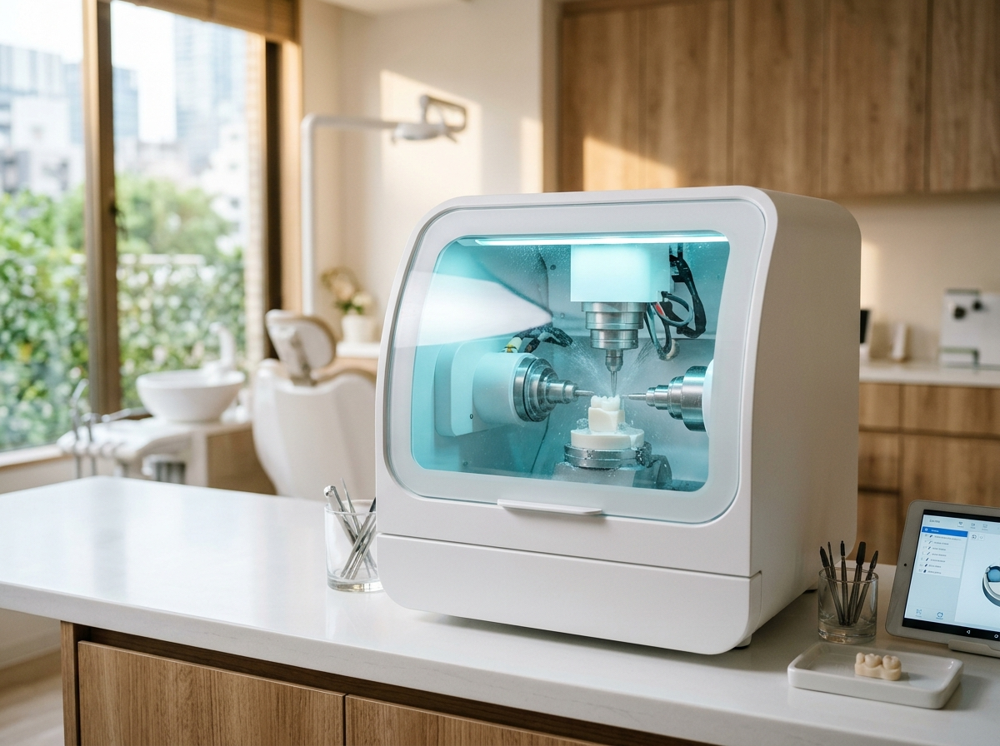

① スキャン
※イメージ（実機写真へ差替可）
専用のカメラ（口腔内スキャナー「プライムスキャン」）で、上の歯・下の歯・かみ合わせを撮影してデータにします。
当院では、お口の中を撮影する「口腔内スキャナー」と、被せ物を削り出す「ミリングマシン」をそろえ、保険診療の白い被せ物（CAD/CAM冠）を院内で設計・製作しています。
お口の中の撮影から、被せ物の設計・削り出しまでを院内のシステムで行います。
専用のカメラ（口腔内スキャナー「プライムスキャン」）で、上の歯・下の歯・かみ合わせを撮影してデータにします。

※イメージ（画面写真へ差替可）撮影したデータをもとに、コンピューター上で被せ物を設計します。

※イメージ（実機写真へ差替可）院内のミリングマシン「CEREC Primemill」で、材料のブロックから被せ物を削り出します。
お口の状態を確認し、診察のうえご説明いたします
金属を使わない白い被せ物で、健康保険で治療できる場合があります。
健康保険で使えるかどうかは歯の場所などによるため、診察のうえご説明いたします。
院内で設計・製作しているため、作り直しが必要になった場合も院内で対応できます。
保険診療の場合、型取り（スキャン）の日と、被せ物を装着する日は別の日になります。
セラミックのブロックを院内で削り出して、1日で被せ物を装着する治療（ワンデイトリートメント）は、現在は行っておりません。院長が技術を身につけたうえで、将来的に取り組みたいと考えています。
始める際は、費用・治療期間・リスクをこのページでお知らせします。
すり減りにくく、水分を吸わないため汚れが付きにくい材料です。一方で、力のかかり方によっては欠ける（チッピング）ことがあります。
健康保険で使える材料です。性質はプラスチックの仲間に入ります。
院内CAD/CAMシステムに関するご質問などは、下のボタンからお問い合わせフォームをご利用ください。
お問い合わせはこちら ※Googleフォームが新しいタブで開きます診療時間はお電話でご確認ください
| 医院名 | うめがえ歯科医院 |
|---|---|
| 院長 | 梅ヶ枝 裕子 （歯科技工士の免許も保有） |
| 所在地 | 〒431-3123 静岡県浜松市中央区有玉西町2446 |
| 電話 | 053-475-6480 |
| 診療時間 | 診療時間はお電話でご確認ください |